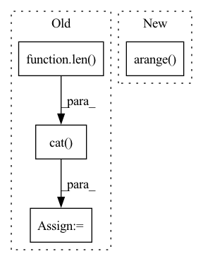

Pattern ID :20536
Before Change
creates a "useful" form of the posterior probabilities, rearranged into order of phoneme appearance
U_max = int(phn_lens_abs.max().item())
batch_size = len( phn_lens_abs)
fb_max_length = int(lens_abs.max().item())
batch_size = len(phn_lens_abs)
device = emission_pred.device
// make mask based on fbank_lengths
mask = torch.arange(fb_max_length).to(device)[None, :] < lens_abs[:, None]
emission_pred_acc_x_length = torch.where(mask[:, :, None], \
emission_pred, torch.tensor([-1e-38]).to(device)) // was -float("Inf"), changed & nan errors stopped (nan from logsumexpbackward)
// create "zero_plane" for next bit:
zero_plane = torch.unsqueeze(-1e-38*torch.ones([batch_size, fb_max_length]), dim = 2).to(device)
// put "zero_plane" at beginning of the emission probabilities to be put in
// the place of the "padding" phoneme (which has the index 0)
print(zero_plane.shape)
print(emission_pred_acc_x_length.shape)
emiss_pred_with_zeros = torch.cat( (zero_plane, emission_pred_acc_x_length), 2)
phns = phns.to(device)
// manipulate y tensor, and then "torch.gather"
phns_copied = phns.unsqueeze(1).expand(-1, fb_max_length, -1)//.to(device)After Change
// apply mask based on phn_lens_abs
mask_phn_lens = (
torch.arange( U_max) .to(device)[None, :] < phn_lens_abs[:, None]
)
emiss_pred_useful = torch.where(
mask_phn_lens[:, None, :],In pattern: SUPERPATTERN
Frequency: 3
Non-data size: 4
Instances Fragment ID: 66350892
Project Name: speechbrain/speechbrain
Commit Name: cc600a8d98ce0d7f63e3ceef4dce88dbd7928a63
Time: 2020-06-01
Author: rastorge@eos18.server.mila.quebec
File Name: speechbrain/alignment/aligner.py
M Class Name: ViterbiAligner
N Class Name: ViterbiAligner
M Method Name: make_emiss_pred_useful(5)
N Method Name: make_emiss_pred_useful(5)
M Parent Class:
N Parent Class:
M File Name: speechbrain/alignment/aligner.py
N File Name: speechbrain/alignment/aligner.py
M Start Line: 104
M End Line: 123
N Start Line: 104
N End Line: 133
Before Change
matrix.indices()[0, :] != row_index]
replacement_row_indices = torch.stack(
[torch.tensor(row_index, device=matrix.device)]*len( row.values()) )
replacement_indices = torch.stack([replacement_row_indices,
row.indices()[1, :]])
new_indices = torch.cat( [new_indices, replacement_indices], -1)
new_values = torch.cat([new_values, row.values()], -1)
new_matrix = torch.sparse_coo_tensor(
new_indices, new_values, size=matrix.shape,
dtype=matrix.dtype, device=matrix.device)After Change
row = row.unsqueeze(0)
// delete existing indices we dont want
diag_indices = torch.arange( matrix.shape[0])
diag = torch.ones_like(diag_indices)
diag[row_index] = 0
removal_matrix = torch.sparse_coo_tensor(
torch.stack([diag_indices]*2, 0), diag, Fragment ID: 66350893
Project Name: v0lta/pytorch-wavelet-toolbox
Commit Name: ced7891d6e879825d3e5dc0d52e2c7fb08b22440
Time: 2021-09-27
Author: moritz@wolter.tech
File Name: src/ptwt/sparse_math.py
M Class Name: AnonimousClass
N Class Name: AnonimousClass
M Method Name: sparse_replace_row(3)
N Method Name: sparse_replace_row(3)
M Parent Class:
N Parent Class:
M File Name: src/ptwt/sparse_math.py
N File Name: src/ptwt/sparse_math.py
M Start Line: 82
M End Line: 107
N Start Line: 82
N End Line: 105
Before Change
data = self.dist_mat.flatten()
else:
idxs = torch.where(labels == i)[0]
N = len( idxs)
self.compute_score(model_params, idxs)
row = torch.cat((row, idxs.repeat_interleave(N)), dim=0)
col = torch.cat( (col, idxs.repeat(N)), dim=0)
data = np.concatenate([data, self.dist_mat.flatten()], axis=0)
sparse_simmat = csr_matrix((data, (row.numpy(), col.numpy())), shape=(self.N_trn, self.N_trn))
self.dist_mat = sparse_simmat
fl = apricot.functions.facilityLocation.FacilityLocationSelection(random_state=0, metric="precomputed",After Change
total_greedy_list = list(np.array(total_greedy_list)[rand_indices])
gammas = list(np.array(gammas)[rand_indices])
elif self.selection_type == "Supervised":
idxs = torch.arange( 0, self.N_trn) .long()
N = len(idxs)
self.compute_score(model_params, idxs)
row = idxs.repeat_interleave(N) Fragment ID: 66350894
Project Name: decile-team/cords
Commit Name: 0b9fa0d7a62b59ab3d740399460db130d1d933ad
Time: 2021-11-10
Author: krishnateja.killamsetty@utdallas.edu
File Name: cords/selectionstrategies/SL/craigstrategy.py
M Class Name: CRAIGStrategy
N Class Name: CRAIGStrategy
M Method Name: select(3)
N Method Name: select(3)
M Parent Class: DataSelectionStrategy
N Parent Class: DataSelectionStrategy
M File Name: cords/selectionstrategies/SL/craigstrategy.py
N File Name: cords/selectionstrategies/SL/craigstrategy.py
M Start Line: 276
M End Line: 291
N Start Line: 276
N End Line: 281